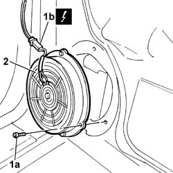
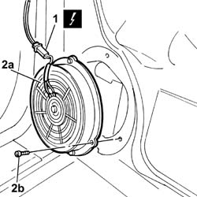

5570T91 FRONT SIDE SPEAKER (one), left or right - R.R. with door panel removed
- Path
- Procedures > 55 ELECTRICAL EQUIPMENT > 5570 ACCESSORIES > 5570T CAR RADIO AND CAR TELEPHONE > 5570T91 FRONT SIDE SPEAKER (one), left or right - R.R. with door panel removed
- Kind
- repair procedure (removal / refitting; the operation number is the code)
- Applies to
- all engines; all production periods
- Interactive page
- https://sloeber94.github.io/elrnDB-lThss/en/#/150129
Applies to: all engines; all production periods
 Removing
Removing
 Refitting
Refitting1. Undo the fixing bolts (1a) and remove the electical connector (1b).
 | Description | Connector |
|---|---|---|
1b | Speaker in left front door | P035 |
| Description | Connector |
|---|---|---|
1b | Speaker in right front door | P036 |
2. Remove the front side speaker.

Applies to: all engines; all production periods
Refitting
Removing1. Connect the electrical connector for the front side speaker.
| Description | Connector |
|---|---|---|
1 | Speaker in left front door | P035 |
| Description | Connector |
|---|---|---|
1 | Speaker in right front door | P036 |
2. Fit the front side speaker (2a) in the housing and tighten the fixing bolts (2b).
